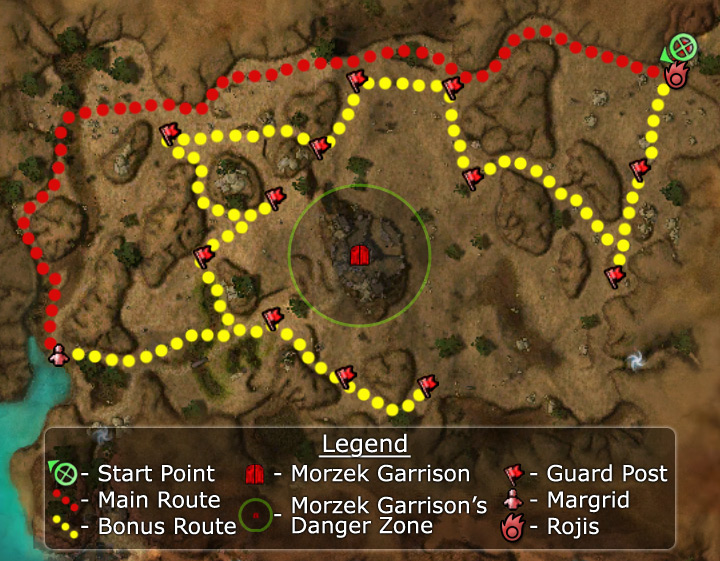

◉ Mission Map

Click to enlarge · Local cache · Wiki
Summary (click to expand)
After rescuing Sunspears captured and imprisoned by the Kournan forces it becomes important to evacuate them to the relative safety of Istan and get news of the rout to the Istani Council.
Region: Kourna · Mission: 5 of 20 · Type: Cooperative
Required hero: Koss
✓ Objectives
Lead the Sunspear Evacuees to Dajkah Inlet without being discovered by the garrison.
- Kill all the guards at the garrison posts before they sound an alert and blow your cover.
- Disarm the sentry traps before they discharge.
- Start negotiations with Margrid the Sly.
- *BONUS* Neutralize all guard posts.
- [0...12] of 12 guard posts neutralized!
→ Walkthrough
Your goal is simple: bring at least one of the eight Sunspear Evacuees to the coast at the opposite side of the map for evacuation. You can do this by avoiding or removing threats along the way. Since each of the evacuees is a monk, they are generally capable of healing themselves, although you should keep an eye on their health.
Objective
Your task is complicated by four factors: patrols, Sentry Traps, guard posts, and the garrison:
- Patrols: The area is littered with Kournan military patrols. Avoid over-aggroing them, especially in hard mode.
- Sentry Traps dot the area (there is one close to nearly every guard post). As you approach, a bar timer appears to indicate a 5-second window within which you can use the Disarm Trap skill to disable it. If it activates, it will inflict 100 damage to all your allies in its area. Since the skill is easily interrupted, make sure that the Kournan rangers are targeted other members of the party before attempting to activate it. Anybody in the party - not just a player - can activate it. Activating the Disarm Trap skill while the timer is still running is enough to successfully deactivate the trap, unless Disarm Trap is interrupted.
- Twelve guard posts are located throughout this mission; they are marked on the map by a red flag if active and gray one if neutralized. If you approach and do not kill the guards quickly enough, you will be targeted by siege attacks. A progress bar indicates the amount of time you have, with different colors to indicate how rapidly they expire — from fastest to slowest, they are: red, blue, teal, green and gray.
- Morzek Garrison is the fort in the middle of the area; it is marked on the map by a red door. Moving too close will prompt a warning to avoid moving closer; if ignored, your team will be targeted by a massive siege attack, resulting in at least 600 area of effect (AoE) damage and almost certain loss of your evacuees (and consequently, mission failure). (You will not receive a warning if you have turned off Mission Progress via the Interface tab of the options panel.) The rest of the mission is fairly straight-forward. It is this mechanism that can cause players to have to repeatedly restart the mission as the warning does not give enough time to leave the attack range.
Routes
- Main
The fastest and safest route is to go along the the northern wall of the area and proceed west until you cannot go any farther, reaching the northwest corner of the map. From there, head south until you find Margrid the Sly. Talk to her to complete the mission.
Skipping the bonus reduces the length of the mission by 66% (e.g. less than ten minutes instead of 30 minutes).
- Bonus
The bonus is straight-forward but time-consuming: follow the suggested route to neutralize each of the 12 guard posts, periodically reviewing the mission map (default key: [U]) to ensure that each post's flag has turned gray. You get credit for the bonus regardless of whether you neutralize a post before or after they call for a siege attack, although obviously it is safer to avoid the extra AoE damage.
★ Bonus
See walkthrough and objectives for bonus details (if any).
◆ Hard Mode
The only difference for hard mode is that it can be fatal to over-aggro, especially near the guard towers. Be sure to avoid or destroy nearby patrols before approaching the towers.
☠ Bosses & Elites
See wiki for boss list (or none listed).
✦ Tips & Notes
Skill recommendations
- Area damage over time against guard posts, as mobs tend to stay bunched together.
- Enchantment-based builds are vulnerable to enchantment removal by Kournan Oppressors and Seers.
- Hex removal skills could be unnecessary; the only hex spells your party will encounter are Enchanter's Conundrum (the hex that is applied has no impact if your party does not use enchantments) and Life Siphon (ends when its caster dies).
- There are enough corpses for 3 (or more) minion masters.
- Foes
- Kournan Bowmen use Infuriating Heat and Whirling Defense; bring stance-removal skills, skills that bypass blocking, or skills that punish blocking. You are unlikely to need Skills that increase adrenaline gain.
- Evacuees
- The evacuees are all minor healers; consider bringing less healing and more damage, control, or utility skills.
- Since the evacuees all wield staves, their attacks will trigger the many Kournan Bowmen's Whirling Defense, potentially causing heavy damage to melee attackers on your team.
- Speed boosts reduce the amount of time spent wandering, especially when keeping evacuees out of harm's way.
Notes
| The Guild Wars 2 Wiki has an article on Venta Pass. |
- Since it's not necessary to clear the guard posts, you can complete the mission without any fighting, and only receive a Standard reward.
- It is possible to clear the guard posts without starting the detection timer. Just set your melee Heroes to avoid combat, or flag them away and pull the Kournans with a Longbow.
- Talk to Dockmaster Ahlaro for your next primary quest.
- After the completion of this mission, you can arrive at Kamadan, Jewel of Istan with a party larger than that allowed in that outpost (i.e. 4). See Kamadan, Jewel of Istan notes for details.
- Completion of this mission will fill in page #2 in the Night Falls storybook.